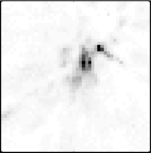
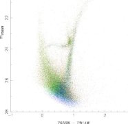
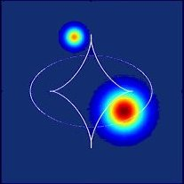

Home
· Meet the GA team

· Research Activites
· Publications

· Ozlens 2008

· Join Us!
|
|
As you can see, the Gravitational Astrophysics group
undertakes a diverse range of research projects. Below we list some of
the projects currently on offer. If you are interested in joining the
group, please contact us for further information:
- Simulating the Cosmos: Cosmologists
regularly simulate large chunks of the universe within a computer,
watching how the forces of gravity build up the galaxies we see around
us today. There are several projects available in this area, including
the development of techniques to compare the structure in
synthetic universes to the observed cosmos, and the development of new
approaches to the inclusion of the complex physics that governs the
formation of the first stars. The projects would utilise supercomputer
environments to provide extremely detailed cosmological models.
- Fundamental Cosmology: This
project involves looking at the meaning and the nature of expanding
space. Couched in the language of Einstein's general relativity, you
will examine the various forms of the cosmological model, and what
these imply for the motions of light rays and observers. The group is
beginning a new look at inhomogeneous cosmologies and whether the
dominant "dark energy" component is little more than a mirage.
- Gravitational Lensing: The
deflection of light by massive bodies is a key prediction of Einstein's
theory of relativity, and gravitational lensing has become a very
important probe on the distribution of matter. Several projects are
available in this area, including the development of new and novel
techniques to reconstruct the true form of a gravitaitonally lensed
source (and ultimately to reveal the distribution of dark matter), as
well as simulating the gravitational lensing effect of clusters and
superclusters of galaxies.
- Gravitational Microlensing: On
the smallest scales, galaxies are made up of compact objects, such as
stars, planets and black holes. These can induce their own complex
gravitational lensing signature which can be used to probe the extreme
environments of distant quasars. In this project, you will use
"raytracing" to recreate the effects of gravitational microlensing, and
consider its influence on the light we receive from the distant
universe.
- Galactic Cannibalism: It's
an unfortunate fact of the universe, but big galaxies got big through
the accretion of smaller systems. This "galactic cannibalism" is still
ongoing and is very apparent within our own Milky Way and the Andromeda
galaxies. In this project, you will use state of the art numerical
simulators to recreate the ongoing collisions and understand just how
they are contributing to the build-up of galaxies.
Students within the Gravitational Astrophysics group are expected to
publish several papers during their PhD research, and to produce a
thesis "by-publication". This places them in an excellent position to
obtain research positions within Australia and in the international
community.
The Gravitational Astrophysics group provides a close-knit and friendly
enviroment in which to undertake your PhD research. We look forward to
hearing from you.
|